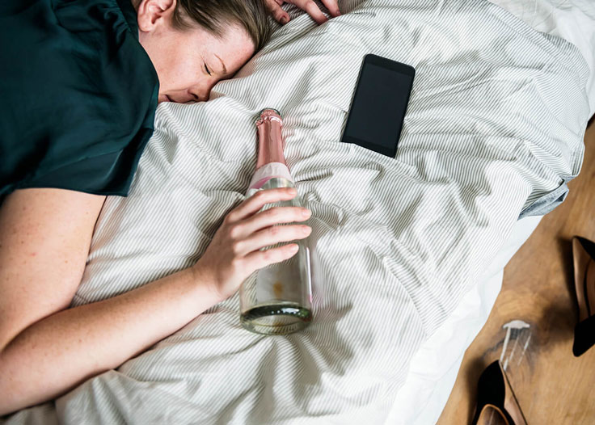

Nagłe zakochanie przerodziło się w równie nagłą katastrofę. Powodem tego był alkohol. In vino veritas, mawiali Rzymianie. Co oznacza: „prawda jest w winie”. Ja znalazłem w winie problem. Teraz pozostaje mi tylko przypomnieć sobie tę historię, opowiedzieć wam ją i wyciągnąć wnioski. I dziękować Panu, że udało mi się znaleźć lekarstwo i wyjść z tego bagna.
Pamiętam nasz przedostatni wieczór. Moja ukochana leżała obok mnie, przytulała się do mnie, a ja chciałem uciec. Wtedy już zdecydowałem, że między nami wszystko skończone. To był kolejny pijacki wieczór. Jak zwykle piliśmy wtedy wszystko: drogi koniak, czerwone wino niewiadomego pochodzenia i tani wermut. Wszystko to razem utworzyło obrzydliwy zapach oparów, zatruwający powietrze w pokoju i nasz związek.

Poznaliśmy się przypadkiem - w sylwestra. Zawsze wierzyłem w cuda Nowego Roku i widziałem w tym dobry omen. Nie spodziewałem się, że los podłoży mi pod nogi kłodę w postaci alkoholizmu.
Samotność stała się już wtedy chroniczna. Całkowicie zająłem się pracą, a moje życie zamieniło się w dzień świstaka - dom-biuro-dom, przerywany comiesięcznymi podróżami służbowymi do innych miast. Wszystko to przypominało niekończący się cykl testów wytrzymałościowych, w których ja, jako mężczyzna, czułem się całkowicie samotny, pozbawiony troski.
Poprzedni związek trwał kilka lat, ale zakończył się boleśnie. Pogrzebałem wtedy swoją miłość, nie rozpamiętywałem i nie opłakiwałem. Nadal żyłem swoim stałym rytmem, dopóki na przyjęciu nie spotkałem długonogiej uśmiechniętej brunetki. Nazywała się Ania i była o trzy lata starsza ode mnie, co jeszcze bardziej wzbudziło moje zainteresowanie. Od razu zaczęliśmy rozmawiać i rozwinęło się między nami uczucie. Po kilku miesiącach zamieszkaliśmy razem.
Na początku nie przywiązywałem wagi do jej nałogu. Spacerom zawsze towarzyszyło picie piwa gdzieś w parku. Wypijała trzy puszki, jedną po drugiej. Piłem razem z nią, żeby dotrzymać jej towarzystwa. I wydało mi się to zupełnie normalne – tak to jest na początku znajomości.

Kiedy zaczęliśmy razem mieszkać, alkoholowy ciąg się nie kończył. Dzień świstaka trwał dalej, ale w nowy sposób: każdego wieczoru słyszałem: „Kochanie, kup proszę wino. Czerwone”; „Skarbie, może po piwku?”; „Misiu, przynieś coś mocniejszego”.
Wieczory zawsze spędzaliśmy ze szklanką lub kieliszkiem, a każdy poranek wyglądał tak samo: ból głowy, nudności, zaniki pamięci. Garść tabletek przeciwbólowych jeszcze nie uratowały nikogo przed dokuczliwym uczuciem wstydu i winy. Gasiłem je kolejną porcją alkoholu. A moja towarzyszka właśnie zapijała zły nastrój i kaca.
Ta sytuacja zaczęła mnie bardzo męczyć. W mojej głowie walczyły dwie przeciwstawne opinie - „musimy porozmawiać” i „daj spokój, to minie”. Wybrałem pierwszą i nie pamiętam, od czego zacząłem, ale chyba brzmiało to jakoś tak:
- Aniu, co ty na to, żeby pić mniej? - powiedziałem.
Od tego wszystko się zaczęło. „Nie jestem alkoholiczką!” Ania wrzasnęła i tupnęła nogami. Chociaż ja nawet nie powiedziałem takiego słowa. Odmówiła kompromisu, argumentując, że: „Jestem dorosła i jak każdy dorosły mam swoje potrzeby. Mam prawo pozwolić sobie na relaks według własnego uznania”. Szczerze mówiąc, spakować swoje rzeczy i uciekać powinienem już wtedy. Ale rozstanie jest zawsze trudną decyzją. Kilka razy próbowałem przeprowadzić podobne rozmowy, ale zawsze prowadziły do kłótni.
– Jak można z tobą żyć bez alkoholu? Nie ma o czym z tobą nawet rozmawiać - powiedziała ze szklanką w dłoni.

A z nią niby było o czym. Każda jej historia zaczynała się mniej więcej tak samo: „Siedziałyśmy z Martą i piłyśmy piwo…” ; „Siedzimy w kawiarni, pijemy wino...”; „Przyszliśmy na plażę i nalali nam...”.
I poszedłem za jej przykładem. Upojony, lałem w siebie litry alkoholu, też znalazłem w tym jakieś ujście na koniec ciężkiego dnia pracy. Nie przywiązując wagi do tego, że kac sprawiał, że kolejny dzień roboczy trudny.
Tak minął rok, który pozostał w mojej pamięci niczym strzępy obrzydliwych wspomnień. Wszystko inne wymazał alkohol.
Świadomość wróciła tak szybko, jak to głupie zakochanie. Stało się to w sobotę rano, około piątej, kiedy obudziłem się z okropnym kacem, który uniemożliwił mi ponowne zaśnięcie. Potem spałem przez 3-4 godziny, nie więcej. Całe ciało mnie bolało, świat wydawał się obrzydliwie wrogi, a ja byłem nic nieznacznym, obrzydliwym pijakiem. Wszędzie dookoła był brud, porozrzucane rzeczy. Silny zapach sfermentowanego alkoholu unosił się w powietrzu jak gęsta chmura. A obok mnie leżała pomarszczona, kobieta z wczorajszym makijażem rozmazanym na opuchniętej twarzy i wydalała z siebie cuchnące opary.
I w tym momencie zdałem sobie sprawę, że to się musi skończyć. Moja ręka już sięgała po puszkę piwa, bo całe ciało tego żądało. Ania obudziła się i poszła za moim przykładem.
Wieczorem mieliśmy spotkać się z przyjaciółmi. I co, bez drinka? Właściwie do tego czasu piliśmy już całymi dniami. Poranne piwo, potem kolejne i tak dalej aż do wieczora. A wieczorem ciężka artyleria.

Powiedziałem Ani, że chcę spróbować rzucić picie. W odpowiedzi pokręciła głową i zasypała mnie argumentami: „Nie widziałeś nigdy alkoholika”; „Piję z umiarem”; „Jesteśmy dorośli i sami decydujemy, jak chcemy żyć”.
– Sam jesteś alkoholikiem, chcesz to się lecz. Ja nie muszę, – powiedziała.
Po dawnej miłości nie było śladu. Wszystko w środku było rozbite na drobne kawałki: pragnienie miłości, nadzieje na przyszłość i wiara w cud. Ania mnie zdenerwowała i poprosiłem ją, żeby opuściła mieszkanie i zniknęła z mojego życia.
Były łzy, krzyki, histeria, szarpanie się, ale to wszystko było mi obojętne. Krzyki pijanej kobiety wyglądały obrzydliwie, a jedyne czego chciałem to zostać sam i to jak najszybciej. Nie bez trudności, ale wciąż namawiałem Anię, żeby wyprowadziła się do swojej matki. Na zawsze.
Zostałem z moim problemem sam. Piłem codziennie przez cztery miesiące, choć ciągle sobie obiecywałem: „dzisiaj jest ostatni raz”. Zrozumiałem, że sam sobie nie dam rady.
A potem pewnej niedzieli obudził mnie kac około czwartej nad ranem. Humor miałem tak kiepski, że biegunka i wymioty przy nim to nic. Jakoś się pozbierałem, wziąłem telefon drżącymi rękami i wpisałem w pasku wyszukiwania Google: „jak przestać pić”. Po przewinięciu kilku linków trafiłem na . Tam pisali, że ten środek pomoże szybko przestać pić. A jego zaletą jest to, że składa się w całości z naturalnych składników, ma pozytywny wpływ na cały organizm i odbudowuje narządy uszkodzone przez alkohol.

„Czego tylko nie napiszą”– pomyślałem ale zamówiłem kilka sztuk tego leku. Zadzwonił do mnie operator i potwierdziłem zamówienie.
Dopóki nie przyszła przesyłka z , piłem dalej. Po otrzymaniu leku natychmiast zacząłem go przyjmować. Pierwsze dni były bardzo trudne... Głód alkoholowy pozostał, ale starałem się jakoś trzymać. Chociaż przyznaję, że kilka razy się załamałem.
Ale po tygodniu zrobiło się lepiej. Psychologiczne uzależnienie od picia ustąpiło. Przestałem być niewolnikiem butelki, wieczory nie kojarzyły się już z alkoholem, a poranki z bólem i nudnościami. Ale tak jak napisano w instrukcji, to tylko pierwszy etap leczenia. W żadnym wypadku nie można przerywać stosowania leku, więc kontynuowałem kurs zgodnie z instrukcją.
Stopniowo moi przyjaciele-pijacy zniknęli z mojego życia. Po prostu nie mieliśmy już ze sobą nic wspólnego. Zwróciłem uwagę na przyjaciół o innych zainteresowaniach.
Od tego czasu minęło 1,5 roku, a moje życie diametralnie się zmieniło. Znalazłam nową, wspaniałą dziewczynę, z którą wieczorami oglądamy filmy, wspólnie gotujemy, spacerujemy, chodzimy do kina - ogólnie ciekawie spędzamy czas. A ten koszmar zostaje w tyle... jak zły sen.
Postanowiłem podzielić się z wami tą historią, ponieważ wierzę, że moje doświadczenie może być przydatne dla innych osób, które mają skłonność do nadużywania alkoholu. jest tym, co wyciągnęło mnie z dna mojego życia i nie pozwoliło zginąć. Ludzie, przestańcie! Nie zabijajcie się. Życie jest piękne i aby zobaczyć jego piękno, musicie porzucić swoje destrukcyjne przyzwyczajenia. A czasami pozbyć się ludzi, którzy są dla was destrukcyjni.
Poniżej zostawię link do strony z . Mają teraz promocję. Pospieszcie się.